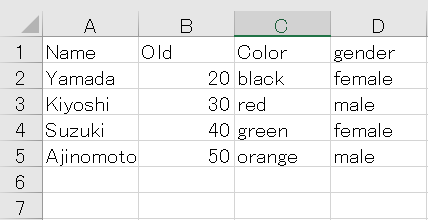
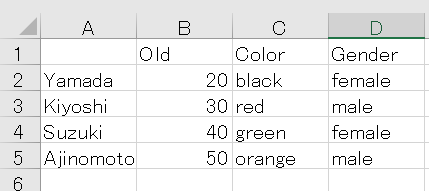

記事掲載：https://laptrinhcanban.com/ja
Python で CSV ファイルを処理する方法について説明します。Python で csv ファイルをcsv.reader 関数を使用してリストとして、または csv.DictReader クラスを使用して辞書として読み込む方法を学習します。また、引用符を含む、ヘッダーを含む CSV ファイルを開くなどの特殊なケースで Python で csv ファイルを開く方法も学びます。これにより、Python csv ファイルの行、列、およびセルの値を取得できます。
PythonでCSVファイルを読み込む前に
Python で csv ファイルを読み込むには、Python でファイルを開いたり閉じたりするの記事で指示したように、まずは open() 関数を使用するか、 with ステートメントを使用してファイルを開く必要があります。
ファイルを開いてファイル オブジェクトを取得したら、read()メソッドを使用して、テキストファイルと同様に、csvファイルを読み込むことができます。
例えば、ディレクトリのuser.csvと、そこに格納された./user/user.csvのファイルが以下の内容があるとします。

この csv ファイルを開き、次のように txt 形式で csv ファイルの内容を含むオブジェクト ファイルを取得します。
with open('./user/user.csv') as f: |
上記の例では、csv ファイルの内容の値をカンマ区切りの txt として確認できます。
基本的にはこの段階でpythonでのcsvファイルの読み込みは完了しているのですが、読み込み結果がtxt形式しかないため操作が難しいため、この結果をcsv関数でリストに変換する必要があります。またはcsv.DictReaderクラスを介して辞書形式に変換して、csvファイルのコンテンツを処理する操作を簡単に実行できるようにします。
そのためには、csv モジュールで csv.reader() 関数を使用する必要があります。
Pythonでcsvファイルを読み込む | csv.reader()
Python の csv.reader 関数
csv.reader() 関数はcsv モジュールの組み込み関数であり、Pythonで CSV ファイルを読み込む専用の関数です。
PythonでCSVファイルを操作したい場合には必須の機能です。
csv.reader() 関数を使用できるようにするには、次のように csv モジュールをプログラムにインポートする必要があることに注意してください。
import csv |
csv.reader 関数を使用して Python でCSVファイルを読み込む構文は次のとおりです。
csv.reader(f)
そこで、fはopen()関数またはwith ステートメントでファイルを正常に開いたときに返されるファイル オブジェクトです。
csv.reader() 関数はイテレータを返します。イテレータにはリストが含まれており、各リストは CSV ファイルから読み取られた 1 行の内容です。
具体的な例として、次のように csv.reader 関数を使用して CSV ファイルを読み取ります。
import csv |
csv ファイルを読み取り、csv.reader() 関数を使用して結果をリストとして保存
上記のように、csv.reader() 関数はイテレータを返します。イテレータには、CSV ファイルから読み取られた行の内容である各リストを含むリストが含まれています。
このイテレータを取得したら、for ループを使用して、その反復子内から CSV ファイル内の行を含むリストを取得できます。次に、Python のリスト処理関数とメソッドを使用して、CSV ファイルのコンテンツを処理することができます。
具体的な例として、次の内容を持つファイル./user/user.csvがあるとします。
次のように、csv.reader() 関数を使用してこの csv ファイルを読み取り、反復子を取得して、CSV ファイルの行を含むリストを出力します。
import csv |
CSV ファイルの各行が読み込まれ、その行の各列の値は要素として結果リストに保存されることがわかります。
イテレータでは、結果は個別に存在するリストであるため、これらのリストを一般的に使用するには、次のように Python でリスト内包表記 を使用して、csv ファイルの内容全体を表す 2 次元リストにそれらを格納する必要があります。
with open('data/src/sample.csv') as f: |
csvファイルの指定した行、列、セルの値を取得
上記で作成した二次元リストの要素にアクセスすることで、csv ファイルで指定された行、列、セルの値を取得できます。
たとえば、次のように csv ファイルの 1 行目と 2 行目の値を取得します。
print(l[0]) |
指定された行と列を持つセルを取得する場合は、次のように記述します。
print(l[0][0]) |
CSV ファイルの指定された列の値を取得する場合は、Python でリストの行と列を入れ替えるコマンドを次のように記述して適用する必要があります。:
l_hoandoi = [list(x) for x in zip(*l)] |
上記の値はすべて文字列形式であることに注意してください。したがって、上記の値を数値として使用する必要がある場合は、文字列を python で数値に変換する必要があります。
print(l[1][1]) |
delimiter を指定
デフォルトで、csv.readerクラスを使用しPython で csv ファイルを読み込むときに、コンマを区切り文字として使用します。また、カンマは CSV ファイルのデフォルトの区切り文字とも見なされます。
ただし、一部の CSV ファイルでは、別の記号を使用してカンマを区切り記号として使用されることができます。この場合、delimiter引数区切り記号を変更する必要があります。
たとえば、次のようにスペース区切り文字を含む CSV ファイルを読み込みます。
with open('./client/sample_space.txt') as f: |
この CSV ファイルを読み込むには、次のようにdelimiter=' 'で指定します。
with open('./client/sample_space.txt') as f: |
同様に、タブ区切り形式の CSV ファイルに遭遇した場合は、delimiter='\t'で指定するだけで済みます
二重引用符の処理
一部の CSV ファイルでは、次のように列の値が二重引用符で囲まれて保存されます。
with open('./client/sample_quote.txt') as f: |
この場合、デフォルトで Class csv.reader() が引用符を削除し、中間の値のみを保持するのに役立つため、特別な注意を払う必要はありません。
with open('./client/sample_quote.txt') as f: |
ただし、これらの引用符を結果に保持する必要がある場合はquoting=csv.QUOTE_NONEの引数を追加します。
with open('./client/sample_quote.txt') as f: |
Pythonでヘッダーを含むCSVファイルを処理する
一部の CSV ファイルには、次のヘッダーが含まれています。:

ファイルを txt として開いた後、結果は次のようになります。
csv_path = './user/sample_header.csv' |
ファイルのヘッダー行がカンマで始まることがわかります。Python でこの csv ファイルを読み込む方法は、上記のように特別なことは何も変更しません。
import csv |
結果の唯一の違いは、空白文字の''が結果の先頭にのみ追加されることです。
PythonでCSVファイルを辞書として読み込む | csv.DictReaderader
csv ファイルを読み取り、結果を辞書として保存
上記では、csv.reader() 関数を使用して CSV ファイルをリストとして読み込む方法を学びました。
上記に加えて、次の記述で csv.DictReader クラスを使用して、Python で CSV ファイルを辞書として読み込むこともできます。
with open('./user/user.csv') as f: |
たとえば、次の内容の csv ファイルがあるとします。
with open('./user/user.csv') as f: |
Pythonでcsv.DictReaderクラスを使ってCSVファイルを読み込むと、デフォルトではファイルの1行目の値が辞書のキーになります。
import csv |
その結果、辞書が返されます。
[{'Color': 'black', 'Name': 'Yamada', 'Old': '20', 'gender ': 'female'}, |
次に、キーを指定して python 辞書で値を取得することにより、次のように行、列、およびセルの値を取得できます。
print(l[1]) |
CSV ファイルにヘッダー行がない場合、または別のキー値を使用したい場合は、次のようにcsv.DictReaderクラスを使用して csvファイルを読み込むときにfieldnames引数を指定します。
import csv |
結果：
{'a': 'Name', 'b': 'Old', 'c': 'Color', 'd': 'gender '} |
Pythonでヘッダーを含むCSVファイルを処理する
CSV ファイルにヘッダーが含まれている場合、例:
ファイルを txt として開いた後、結果は次のようになります。sau:
csv_path = './user/sample_header.csv' |
この CSV ファイルを csv.DictReader クラスで開くと、次のように空白文字' 'が出力のキーになります。
import csv |
結果：
[{'': 'Yamada', 'Color': 'black', 'Gender ': 'female', 'Old': '20'}, |
結果からこの空白を削除するには、次のように Python 辞書で要素の削除コマンドを使用します。
with open(csv_path) as f: |
結果：
[{'Color': 'black', 'Gender ': 'female', 'Old': '20'}, |
まとめ
上記 Kiyoshi は、python で csv ファイルを読み込む方法について説明しました。レッスンの内容をよりよく理解するために、今日の例を書き直す練習をしてください。
そして、次のレッスンで Python の知識についてさらに学びましょう。.
URL Link
ホーム › 初心者向けのpython学習>>17. pythonでのcsv・excel